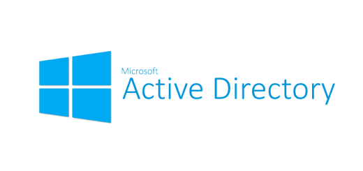
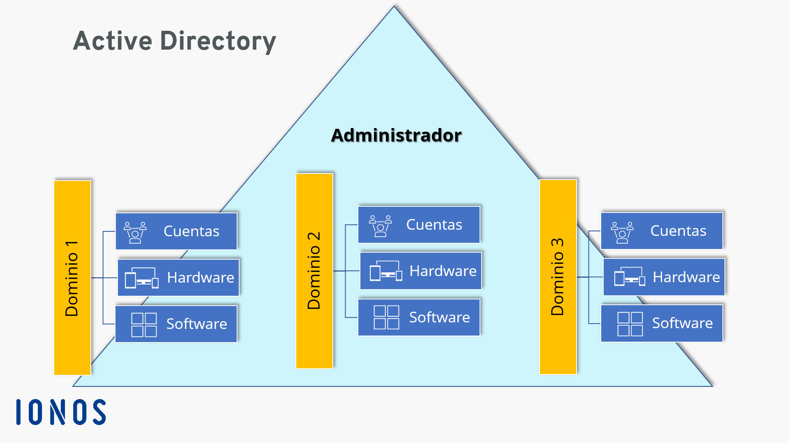

Los Active Directorys son almacenes de información acerca de los objetos de una red, facilita su búsqueda y uso por parte de los usuarios y administradores. Este mismo usa un almacén de datos estructurado como base para una organización jerárquica lógica de la información del directorio
Es un servicio de directorio desarrollado por Microsoft para redes Windows. Este mismo desempeña un papel importante para las empresas con recursos informáticos complejos, este mismo tiene servicios que controlan gran parte de la actividad que se desarrolla en su entorno TI. En particular, se aseguran de que cada persona sea quien dice ser mediante una autenticacion, generalmente al verificar el ID de usuario y la contraseña que ingresa, y le permite acceder solo a los datos que tiene permitido usar dicho usuario. Esto se puede lograr ya que Active Directory tambien cuenta con una base de datos que contiene información crítica sobre su entorno, incluidos los usuarios y las computadoras que hay y que permisos tiene cada una de ellas. Por ejemplo, la base de datos puede contener una lista de 50 cuentas de usuario con informacion como el puesto de trabajo, el número de teléfono y la contraseña de cada persona. También registrará sus permisos para que queden guardados y solo puedan ser editados por administradores.
Los servidores que ejecutan AD DS se denominan controladores de dominio. Las organizaciones normalmente tienen varios dominios y cada uno tiene una copia del directorio para todo el dominio. Los cambios realizados en el directorio en un controlador de dominio, como la actualización de la contraseña o la eliminación de una cuenta de usuario, se replican en los otros controladores de dominio para que todos estén actualizados. Un servidor de catálogo global es un controlador de dominio que almacena una copia completa de todos los objetos en el directorio de su dominio y una copia parcial de todos los objetos de todos los demás dominios del bosque; esto permite a los usuarios y aplicaciones encontrar objetos en cualquier dominio de su bosque. Los equipos de escritorio, portátiles y otros dispositivos que ejecutan Windows (en vez de Windows Server) pueden formar parte de un entorno de Active Directory, pero no ejecutan AD DS.
AD DS se basa en varios protocolos y estándares establecidos, incluidos en el protocolo ligero de acceso a directorios, Kerberos y DNS (sistema de nombres de dominio).
AD tiene tres niveles principales: Dominios, Arboles y Bosques.
Un dominio es un grupo de usuarios relacionados, computadoras y otros objetos de AD, como todos los objetos de AD para la oficina central de su empresa. Se pueden combinar varios dominios en un árbol y varios árboles se pueden agrupar en un bosque.
Un Dominio representa un límite de administración. Los objetos de un dominio determinado se almacenan en una única base de datos y se pueden administrar juntos.
Un Bosque representa un límite de seguridad. Los objetos de diferentes bosques no pueden interactuar entre sí a menos que los administradores de cada bosque creen una relación de confianza entre ellos. Por ejemplo, si tiene varias unidades de negocio que no estan conectadas, probablemente desee crear varios bosques.